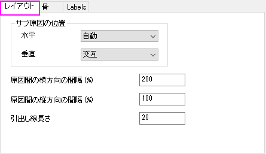
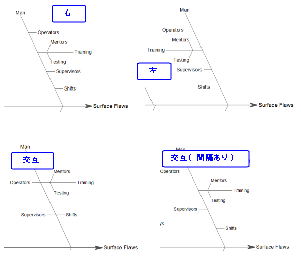
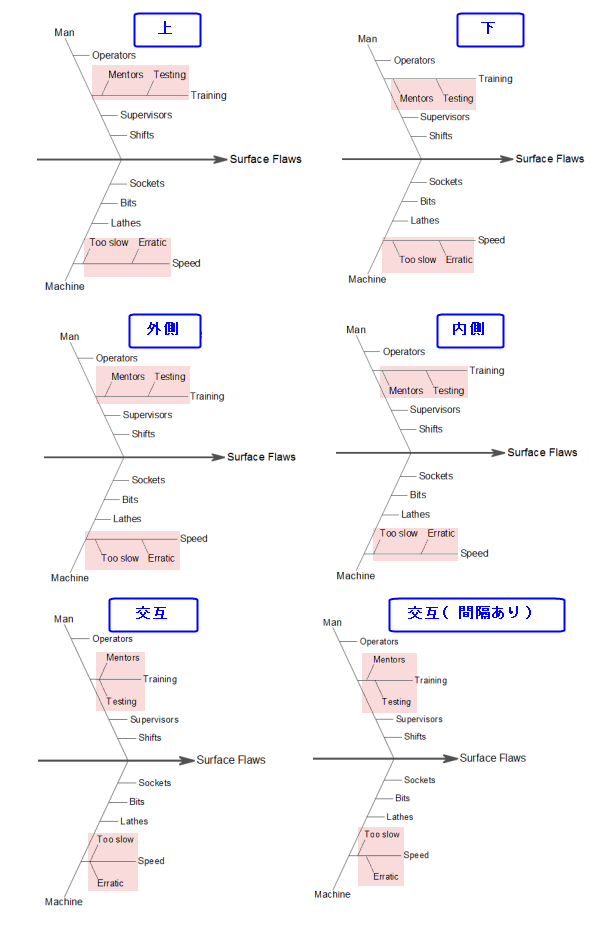

(作図の詳細) 特性要因図のレイアウトタブ
PD-Layout-tab-CauseEffect
このタブでは特性要因図のレイアウト設定が可能です。

サブ原因の位置
このコントロールグループを使用して、サブ原因の位置を調整できます。
水平
サブ原因を水平方向に配置する方法を指定します。

自動を選択した場合
- サブ原因の数が、いずれかの主原因の下で8以上である場合、自動は右になります。
- サブ原因数が8未満の場合
- 同じ主原因の下に深さ >= 3の複数のサブ原因がある場合（この主原因の深さが4より大きいことを意味する）、自動は代替になります。
- それ以外のケースについては、自動は右になります。
垂直
サブサブ原因を垂直に配置する方法を指定します。

原因間の横方向の間隔 (%)
水平方向の原因間の間隔を指定します。単位はフォントの高さの％です。
原因間の縦方向の間隔 (%)
垂直方向の原因間の間隔を指定します。単位はフォントの高さの％です。
引出し線長さ
ターミナルブランチ（サブブランチがないもの）の引出し線の長さを指定します。単位はポイントです。